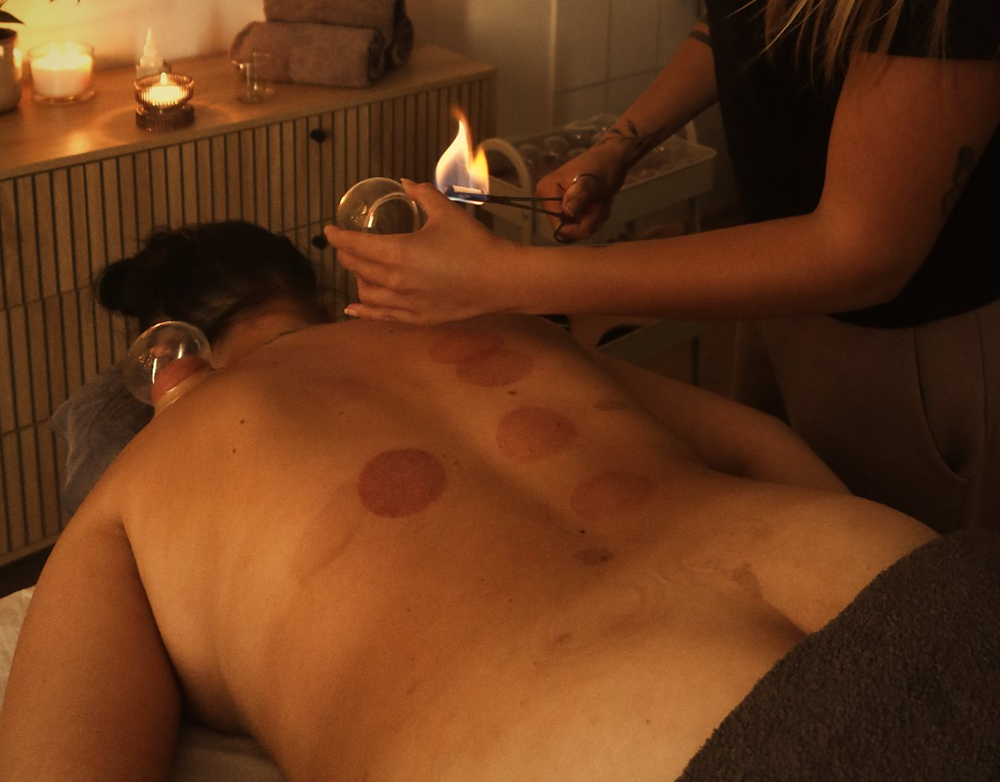
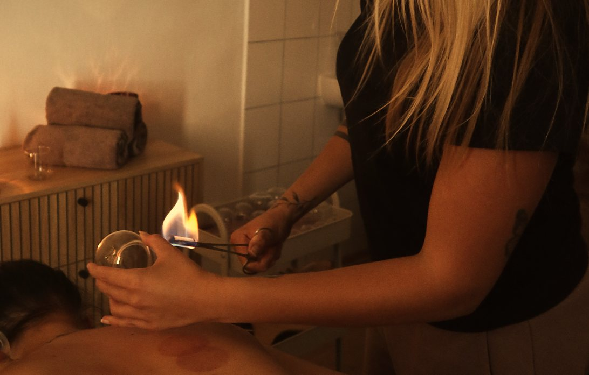
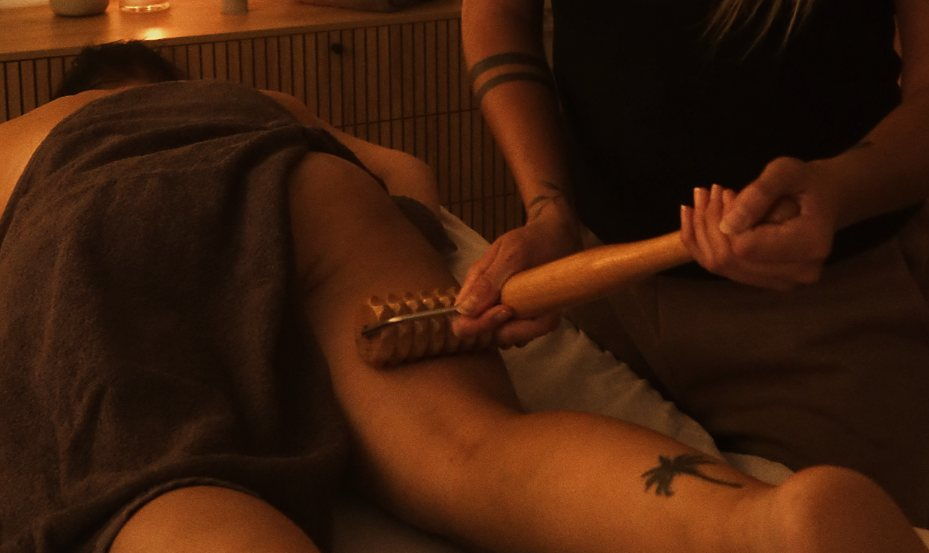

Bankovanie • PiešťanyCupping
for a stiff back.
A traditional method with glass cups that people look for when their back and neck feel stiff.
How cupping works
What is cupping?
In cupping I warm the air in a glass cup with a flame and place the cup on the skin. As the air cools, gentle suction lifts the skin and the tissue beneath. The area warms up, and many clients describe a feeling of warmth and release.
I leave the cups in place for a few minutes or glide them over oiled skin (cupping massage). Cupping usually leaves round marks that fade on their own within a few days.
- Glass cups
A traditional suction method.
- Warmth and circulation
A pleasant feeling of release.
- Stiff back
Back, neck and shoulders.
- 30 or 45 minutes
Also combined with massage.

“I was really very satisfied. The place is clean, calm and pleasant. The massage was done very professionally and with great care. I really appreciated the kind approach throughout the whole treatment. I left completely relaxed and will gladly come back. Recommended!” (translated)Alisijan S. · Google
Prices & booking
Cupping prices in Piešťany
Click a length. The calendar opens and you pick a day and time.
Full recovery (massage + cupping)
Who it suits
Who cupping is for.
your back, neck or shoulders are stiff
you do sport or physical work
you want to try a traditional method alongside massage
you don’t mind temporary round marks on your back
Your visit
How a cupping session works.
- 01
Booking
Choose 30 or 45 minutes of cupping, or a combination with massage.
- 02
Preparation
I oil your back and tell you what you will feel. I place the cups one by one.
- 03
Cupping
The cups stay for a few minutes or I glide them. At the end I gently massage the back.
First visit
10 % off your first massage.
Leave your e-mail and I will show you a discount code right away. Now and then I send free slots and offers, at most once a month.
Your discount code
LAYLA10
Mention it when you pay on your first visit and get 10 % off. One use per person.
Book a timePreview: the e-mail was not saved; collection starts when the site goes live.
Questions
Cupping: questions & answers.
Does cupping hurt?
Most people feel pulling and warmth, not pain. On very stiff spots it can feel more intense. I adjust the suction and can release a cup at any time.
How long do the marks stay?
The round marks usually fade within 3 to 10 days. Their colour depends on skin sensitivity and suction strength and says nothing about “toxins” in the body.
How much is cupping?
Cupping is 20 € for 30 minutes and 25 € for 45 minutes. Massage combined with cupping (full recovery) is 30 € for 60 minutes and 50 € for 90 minutes.
How often can I have cupping?
I recommend waiting until the marks from the previous session have completely faded, roughly one to two weeks.
Related
Read more.
Other treatments: massage in Piešťany and wood therapy in Piešťany.

6 min read (SK)
Cupping: how it works and why it leaves marks
What happens under the cup, how long the marks last and when to skip cupping (in Slovak).
Read the article
6 min read (SK)
Wood therapy: what to really expect
How a wooden-roller massage works, how many sessions make sense and when to skip it (in Slovak).
Read the article
5 min read (SK)
How often to have a massage
Once a week or once a month? Is 30 minutes enough? A simple guide based on what bothers you (in Slovak).
Read the article
Masáže Layla · Piešťany
Treat your body to
some calm.
Hodžova 4304/20, Piešťany · daily 8:00 – 20:00